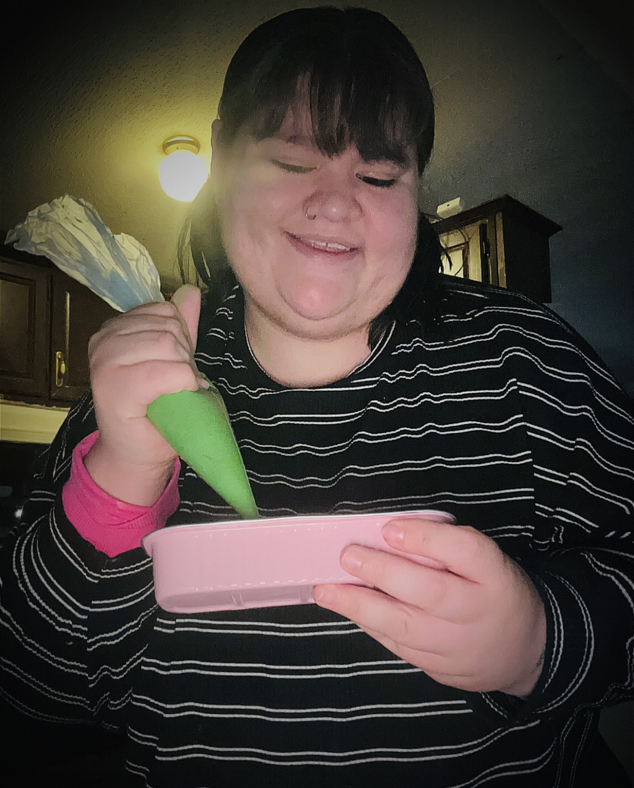

Crafting joy one pastry at a time 🍰
Lex is the best treat creator in all of the Southwest. Not only does she make a top tier tres leches cake, she also excels in care-taking, academics, and being there for her friends and family. Growing up in Farmington, New Mexico, a classic small town, she found the courage to dream big and become an entrepreneur through her successful bakery business, 5275. From cakes to cookies to chocolate covered berries, Lex will make sure her customers are beyond satisfied with their order. When she's not whipping up some delicious dish, Lex is probably spending time her family or working on homework for her Mortuary Science degree. A woman of many trades, she is bound to solidify her mark on her community and the world in big ways.